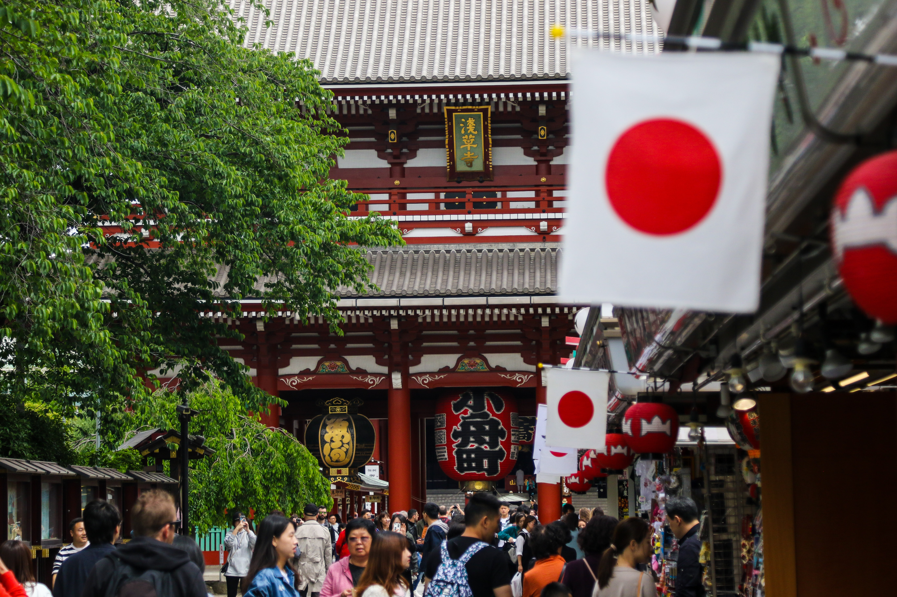

Een website over Japan
Japan (Japans: 日本; geromaniseerd als nihon of nippon) is een land in Oost-Azië. Het is een groep van vele eilanden dichtbij de oostkust van Korea, China en Rusland.


Japan is een archipel, of een reeks eilanden, aan de oostelijke rand van Azië. Er zijn vier hoofdeilanden: Hokkaido, Honshu, Shikoku en Kyushu. Er zijn ook bijna 4.000 kleinere eilanden! De dichtstbijzijnde buren op het vasteland van Japan zijn de Siberische regio van Rusland in het noorden en Korea en China verder naar het zuiden.
Bijna vier vijfde van Japan is bedekt met bergen. De Japanse Alpen lopen langs het midden van het grootste eiland, Honshu. De hoogste top is Mount Fuji, een kegelvormige vulkaan die door veel Japanners als heilig wordt beschouwd.
Japan kan een gevaarlijke plek zijn. Drie van de tektonische platen die de aardkorst vormen, ontmoeten elkaar in de buurt en bewegen vaak tegen elkaar, waardoor aardbevingen ontstaan. Elk jaar treffen meer dan duizend aardbevingen Japan. Japan heeft ook ongeveer 200 vulkanen, waarvan er 60 actief zijn.